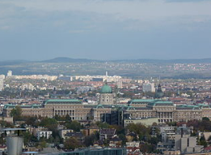
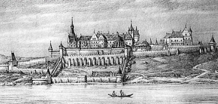
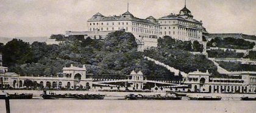

Bár királyi székhelyeink sorában Fehérvár és Visegrád után csak harmadikként szerepel, Magyarország számára mégis nagy fontossággal bír. Megismerése és feltárása a második világháborúban lebombázott és elpusztult korábbi neobarokk királyi palota helyreállítását megelőzően került sor 1948-1963 között. A régészeti kutatások során kerültek napvilágra a középkori királyi székhely föld alá temetett és ez időben már teljesen elfelejtett részletei, többek között a királyi kápolna és a lovagterem is.

Buda fénykorának csúcsát Hunyadi Mátyás (1458–1490) uralkodása idején élte meg. Jelentős bővítésére nem, de átépítésére, gazdagítására nagy súlyt fektetett a király. Az európai udvarok közül szinte itt honosodott meg elsőként az Itáliában született reneszánsz építészeti stílus, majd innen terjedt tovább északnak, Prága és Krakkó felé. Meghonosítása elsősorban annak köszönhető, hogy 1476-ban Mátyás a nápolyi király leányát, Beatrixot vette feleségül, s vele a kor kiváló építészei, szobrászai, s egyéb művészei érkeztek Itáliából. Ez időben létesült Mátyás világhírű könyvtára, a Bibliotheca Corviniana. A pompás díszítésű corvinák azóta szétszóródtak szerte a világban, híres gyűjtemények féltett kincseként emlékeztetve létrehozójukra. Mátyás pompás könyvtárépületének, lakosztályainak fényét a korabeli leírásokon túl csak a föld alól kiásott töredékek őrzik. Építkezései közül ma már csak egyetlen részlet látható: az egykori víztároló – Cisterna Regina – hatalmas belső tere, amelynek tetején egykor fényes függőkertek voltak.

A Budavári Palota (németül Burgpalast, törökül Budin Kalesi vagy Budin Sarayi) Budapest egyik legfőbb kulturális és turisztikai központja, egyben a volt királyi palota. A Budai Várnegyed részeként 1987 óta része Budapest világörökségi helyszíneinek.
A gótikus stílusú királyi palota már az 1300-as évek közepétől épült és építése eltartott az 1400-as évek végéig, így Nagy Lajos, Zsigmond és Mátyás királyaink idején is mindvégig bővítették és díszítették a magyar uralkodók lakhelyét. 1541-től a törökök megszállásának idején a palota állapota romlásnak indult, és az 1686-os ostrom és visszafoglalás során is igen komoly károk keletkeztek a várban és a Várnegyed épületeiben egyaránt. A helyreállítás során már a barokk stílusjegyek érvényesültek, ám megmaradtak a gótikus és a reneszánsz stílus részei is. 1715-ben megkezdődött a palota bővítése egy kisebb méretű barokk kastéllyal, majd a 19. század végén Ybl Miklós és Hauszmann Alajos közreműködésével hozzáépült egy hátsó szárny, mellyel megkétszereződött a palota területe. A Mária Terézia-szárny Duna felé néző homlokzata is meg lett növelve és ekkor kapta meg a barokk és neobarokk kupoláját.
